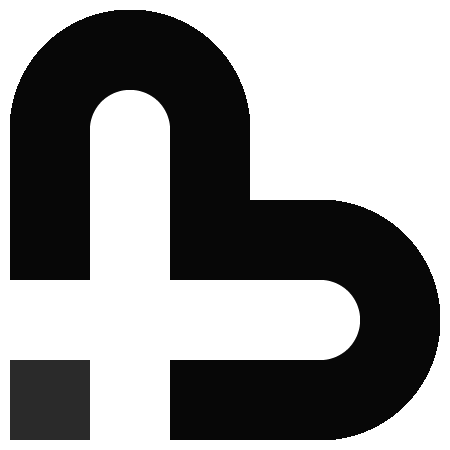

A simple, stateful, multipurpose logo / icon which serves to represent both Bitmark and Marks.
The logo has three states, which translate from recognisable brand to actionalable 'marking' button and back.
Universal logo / icon representing both Bitmark and Marks.
Hovering unclips the logo to reveal a + symbol, click to add reputation / mark.
Actioning reclips and rotates the logo to reveal an M and also a heart.
Marking falls in to three categories, the giving of reputation to people, payment for goods and services, and giving to charity. Whilst technically the actions and results may be the same, there is a difference in incentive to the user. Version3 reflects these differences by offering three color keyed variations for common usage.
Project Bitmark requires two static, easily identifiable, symbols. The first to identify the technology and core currency, the second to identify Marks and all that Marking entails.
Symbol for 'Bitmark', technology, project, and currency.
Recognisable to miners, traders, and those involved with Crypto Currency.
Applied to Bitmark Core
Static Symbol for 'Marking' for non-interactive use.
Recognisable by general web users, as meaning 'Marks accepted here' or 'Use Marks here'.
Applied to media, badges, cards, signage and so forth.